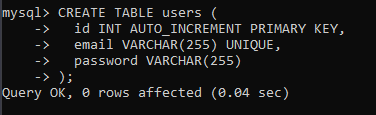
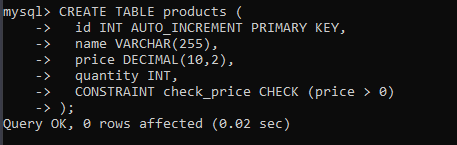
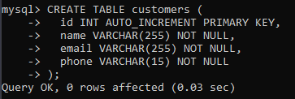
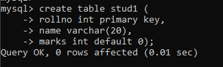

Constraints
Constraints are used to enforce rules on data in MySQL tables. They can be used to ensure data integrity and
consistency, and to prevent invalid data from being inserted into the table. MySQL supports several types of
constraints:
- Primary Key Constraint : A primary key constraint is used to uniquely identify each record in a
table. It ensures that no two records have the same values for the primary key column.
For more info Click here .
- Foreign Key Constraint : A foreign key constraint is used to create a relationship between two
tables. It ensures that values in the foreign key column of one table correspond to values in the primary
key column of another table.
For more info Click here .
- Unique Constraint : A unique constraint is used to ensure that no two records have the same
values for the specified column(s). Unlike a primary key constraint, a unique constraint can allow null
values.
Syntax :
col_name datatype unique
Example :

- Check Constraint : A check constraint is used to ensure that values in a column meet certain
conditions. It can be used to ensure that values are within a certain range, or that they match a specific
pattern.
Syntax :
col_name datatype check condition
Example :

- Not Null Constraint : A not null constraint is used to ensure that a column cannot contain null
values. It ensures that a value is always required for that column.
Syntax :
col_name datatype not null
Example :

- Default Constraint : A default constraint is used to specify a default value for a column in a
MySQL table. If a value is not specified for the column when a new record is inserted, the default value
will be used instead. The default value must be compatible with the data type of the column.
Syntax :
col_name datatype default value
Example :

Constraints can be added to a table when it is created, or they can be added later using the ALTER TABLE
statement. Constraints can also be removed using the ALTER TABLE statement.